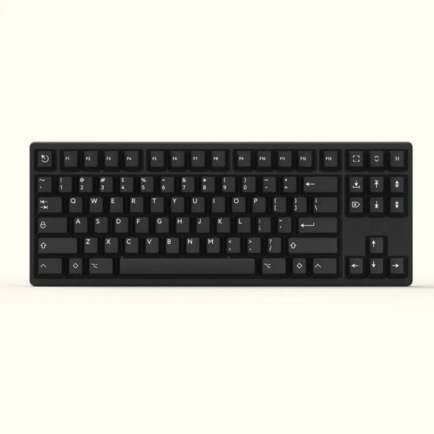
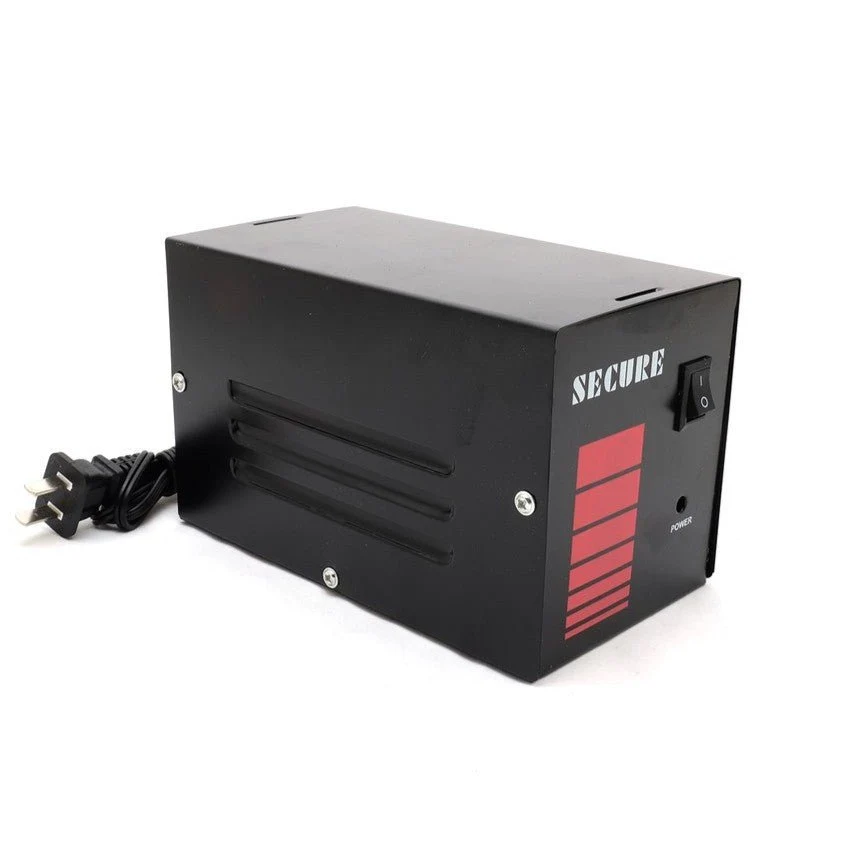
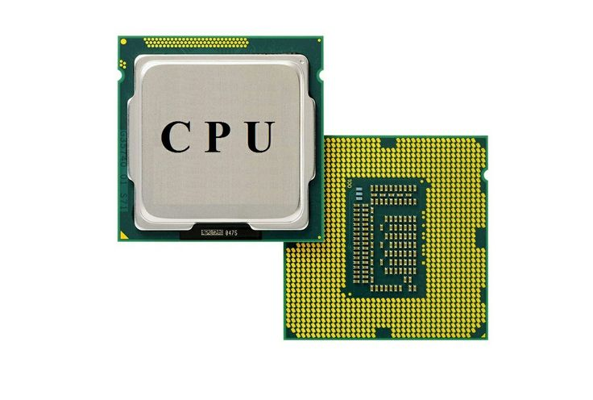
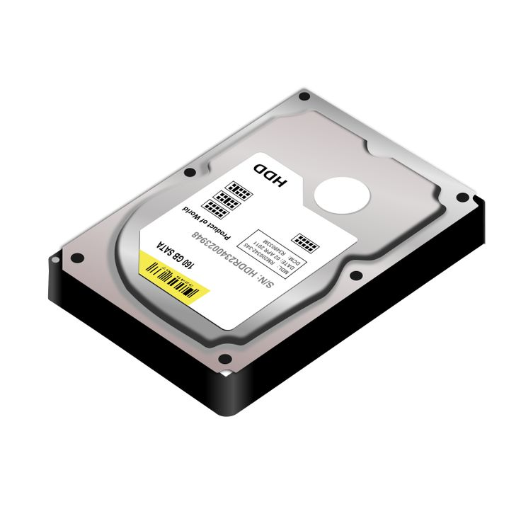
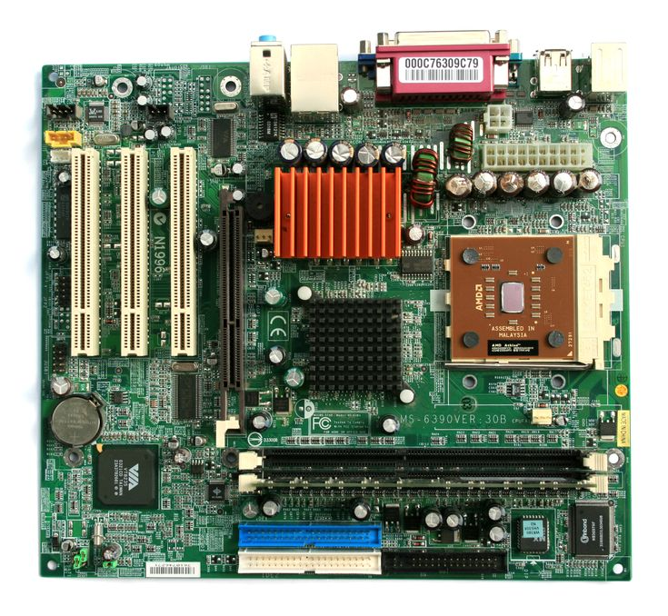
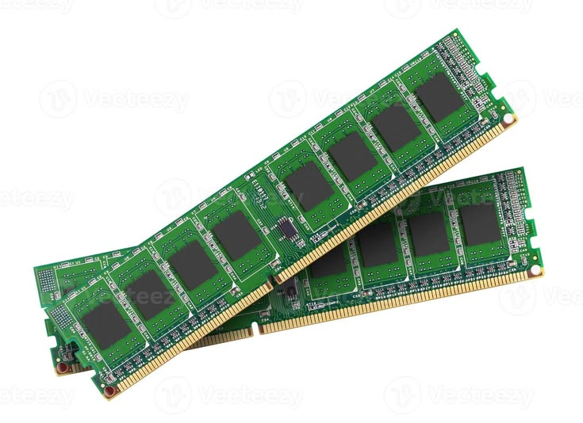
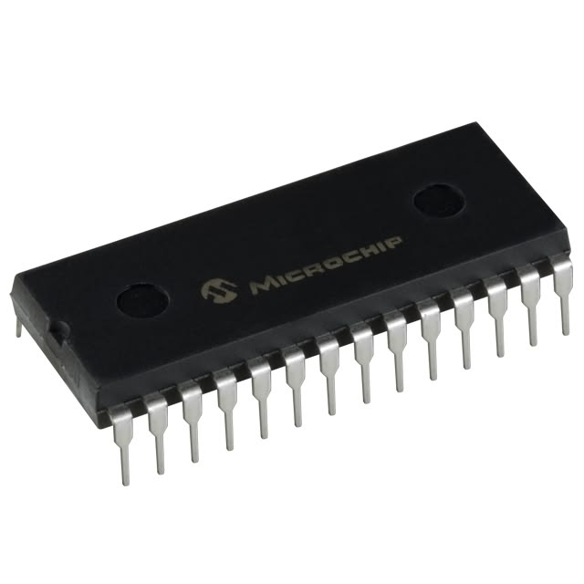
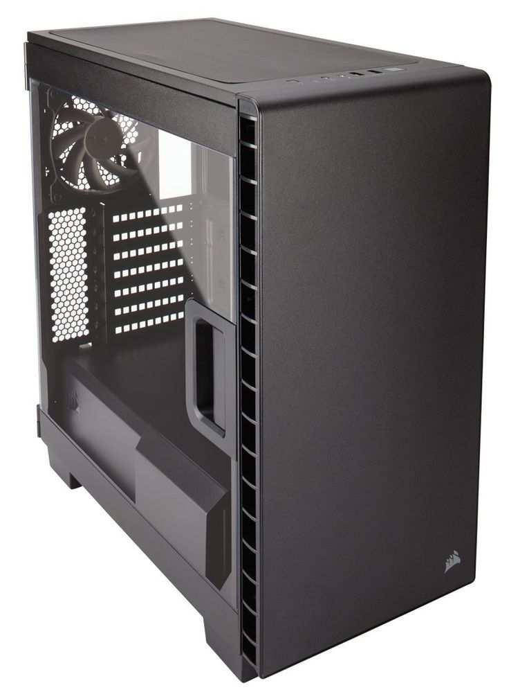
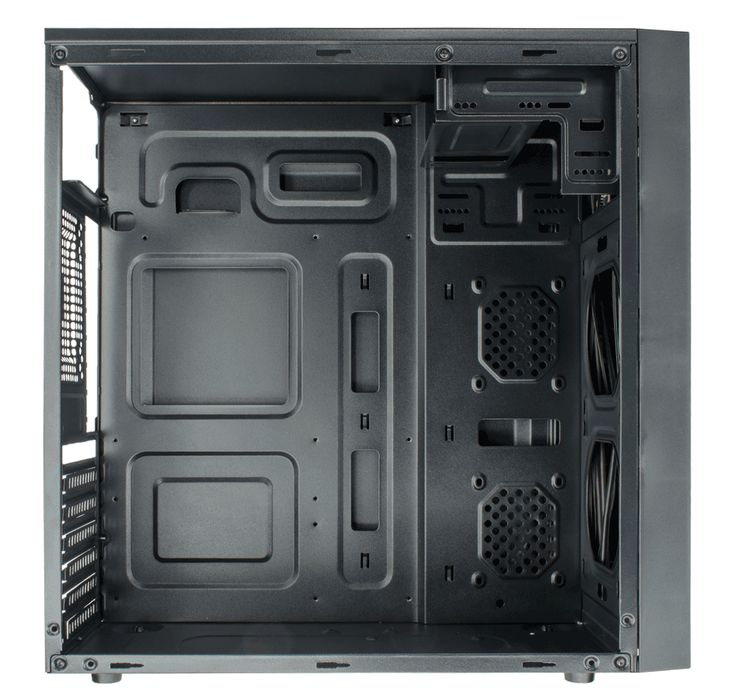

MONITOR
A computer monitor is a primary output device that converts processed electrical signals and data from a computer's graphics card or GPU into a visual display of text, images, videos, and graphical user interfaces.
Exolore the lessons and important concepts we learned throughout our introduction to computing subject.
| Lesson | Topics | Summary |
|---|---|---|
| Lesson 1 | The Computing Industry & Profession | The computing industry includes hardware, software, networking, security and data. it also offers different career opportunities and teaches the importance of ethics, privacy and improving professional skills |
| Lesson 2 | Computing in different fields | Computing helps biology and healthcare through genetics research, medical imaging, and health records. It helps sociology researchers understand social networks and the effects of technology on society. It is also used in environmental science and gaming for climate simulations, conservation, graphics, and artificial intelligence. |
| Lesson 3 | History of Computing | Computers have evolved from simple tools like the abacus to modern smartphones through inventions such as transistors and integrated circuits. Important contributors like Charles Babbage, Ada Lovelace, Alan Turing, and Grace Hopper helped develop modern computing. Computing has changed society by improving communication, education, work, and access to information. |
| Lesson 4 | Key Components of Computer System | A computer system consists of a CPU, RAM, storage devices, and input/output devices that work together to process information. Computer architecture connects these components, while the operating system manages hardware and software. Together, these components allow computers and smartphones to run programs and perform different tasks. |
Discover the important events and developments in the history of computing.
An Ancient tool used for counting and calculations
A mechanical adding machine invented by Blaise Pascal.
Charles Babbage designed a mechanical general-purpose computer.
One of the earliest electronic computers
Helped make computers smaller and more efficient
Combined electronic components into a small chip
Computers became available for home use
Powerful computing devices that fit in our pockets.
Learn about the different parts of a computer and their functions
A computer monitor is a primary output device that converts processed electrical signals and data from a computer's graphics card or GPU into a visual display of text, images, videos, and graphical user interfaces.

A computer keyboard is a primary hardware input device used to enter text, numbers, symbols, and system commands into a computer.
A computer mouse is a handheld input device that turns physical hand movements into cursor actions on a computer screen.

An Automatic Voltage Regulator (AVR) for a computer stabilizes incoming electrical voltage so your PC's power supply unit (PSU) and components receive a steady, safe power level.

The Central Processing Unit (CPU) acts as the brain of a computer, responsible for interpreting and executing software and hardware instructions

A hard disk drive (HDD) serves as a computer's long-term, non-volatile storage device, keeping your operating system, apps, and files safe even when the power is turned off. It stores and retrieves data by magnetizing sections of rapidly spinning metal or glass platters using moving read/write heads.

A motherboard is the main printed circuit board in a computer that connects all internal hardware components and allows them to communicate with each other.

A Random Access Memory (RAM) module (memory board or stick) acts as a computer's high-speed, short-term workspace that temporarily stores active data and instructions for fast CPU access. Unlike long-term storage such as an SSD or hard drive, RAM is much faster and volatile, meaning its contents clear when power is turned off.

The main function of Read-Only Memory (ROM) in a computer is to permanently store essential startup instructions and firmware that remain intact even when the power is turned off. Because ROM is non-volatile, the processor can rely on it to start the system consistently every time

The system unit is the main enclosure or chassis that houses the primary electronic and processing components of a computer, excluding external peripherals like the monitor, keyboard, and mouse.

A computer system chassis (also called a case or system unit) is the physical frame and enclosure that holds, organizes, and protects internal hardware like the motherboard, CPU, GPU, storage drives, and power supply